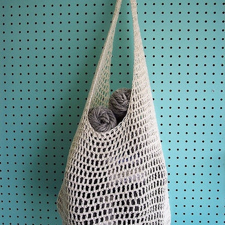

Market Bag
Materials:
Worsted weight cotton yarn (around 200-300 yards, depending on the size of your bag)
Crochet hook size appropriate for your yarn (typically a size H/8 - 5mm hook)
Tapestry needle
Scissors (optional) stitch markers
Skill Level: Beginner
Stitches used:
Single crochet (sc)
Chain (ch)
Pattern:
Body of the bag:
Start with a foundation chain: Chain a number of stitches that is a multiple of 4 + 2 (e.g., 42, 46, 50). This will determine the width of your bag.
Work single crochets into each chain: Turn your work, skip the first chain, and single crochet into each remaining chain stitch.
Continue working rows of single crochets: Until the bag reaches your desired height. You can measure as you go, or stop when the bag reaches your hip or armpit for a good size.
Shaping the base (optional):
Reduce stitches at the end of each row: When you reach your desired height, start decreasing at the end of each row. You can do this by crocheting the last two stitches together.
Continue decreasing: In every other row or every row until you have a few stitches left.
Fasten off and weave in ends: Cut your yarn, leaving a long tail for weaving in the end. Sew the remaining stitches closed using your tapestry needle.
Handles:
Chain a long chain: The length of this chain will determine the length of your handles. A good starting point is to chain around 30-40 stitches for short handles or more for longer ones.
Slip stitch into the first chain to create a loop: This will be the handle.
Make another chain the same length: Repeat step 1 to create the second handle.
Attach the handles to the bag: Sew the ends of the chains securely to the top corners of the bag using your tapestry needle. Weave in any loose ends.
Finishing touches (optional):
Add a border of single crochets or another stitch pattern around the top of the bag for a neater finish.
You can also add a lining to your bag using fabric if you want it to be more sturdy.
Customizations:
Feel free to adjust the size of the bag and the length of the handles to your preference.
You can also experiment with different stitch patterns to create a unique look. For a more open and airy bag, you can try a mesh stitch pattern using chains and single crochets.
Here are some additional resources that you might find helpful:
A video tutorial on crocheting a market bag: YouTube crochet market bag: https://www.youtube.com/watch?v=GcuFJcBl36g
A collection of free crochet market bag patterns with various difficulty levels: https://www.patternworks.com/crochet-market-bag-pattern/
Remember, this is just a basic pattern, so feel free to get creative and make it your own!
Happy crocheting!